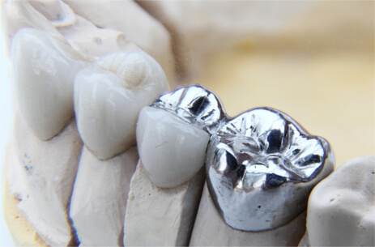
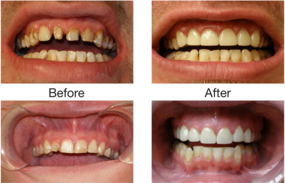
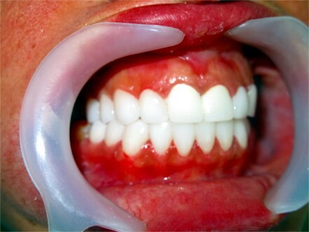
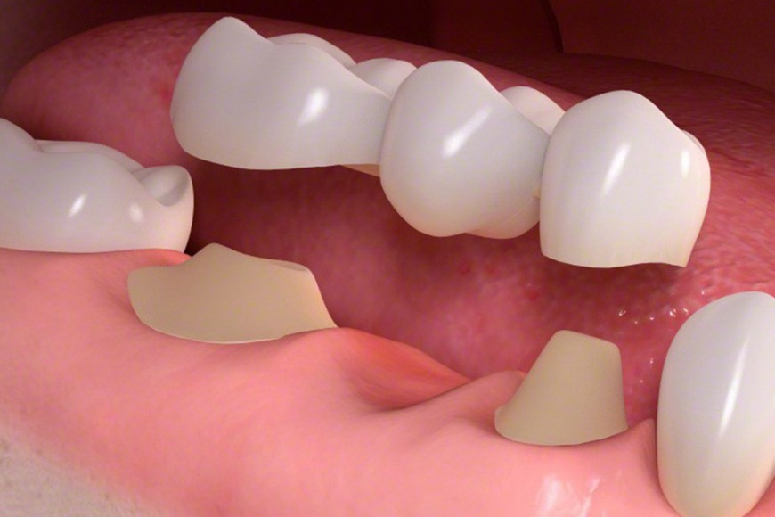

What is a Dental Crown and Why it is required ?
A dental crown is a tooth-shaped “cap” that is placed over a tooth — to cover the tooth to restore its shape and size, strength, and improve its appearance. Crowns when cemented, will encase or cover the visible portion of teeth above the gumline.
Primary uses of dental crowns:
Crowns are available in Metal, Ceramic, and Zirconium materials. Depending on your case, the dentist will offer various options.
Metal Crowns
Metal crowns are usually made up of alloys of gold, platinum, cobalt chromium, and nickel chromium or base metal alloys.
Metal caps are tough and withstand biting, chewing forces and last longer. They do not break or chip and cause discomfort. The only drawback of the metal crown is the metal colour, hence doctors prefer them for out of sight molars.
Ceramic Crowns:
Ceramic crowns are made up of ceramic material specially manufactured for dental/oral health use. They look like natural teeth and hence fit to use anywhere in the mouth. They are also good for people who allergies with metals.
Zirconium Crowns
Zirconia is a powdered form of zirconium dioxide. These are strongest dental crowns.
Zirconium crowns are made using CAD CAM technology. They fit perfectly and look as good as natural teeth or even better.
Advantages of zirconium crowns:
Veener Crowns:
These are thin porcelain materials made to fit over the front surface of the tooth. They are just like false fingernail over a finger.
Veneers are preferred over crowns when you have chipped or broken front teeth that need to be fixed. Veneers are fixed and cannot be removed, once they are set up. Thus your doctor will discuss with you everything before moving forward with dental veneers.
They look as good as natural teeth hence used to close the gaps caused due to various issues.
Veneers can chip and break just like natural teeth. They are usually strong and last a long time, but if they chip or break then you may need to replace or repair them.
Bridges and crowns are fixed prosthetic devices that are cemented onto existing teeth or implants by a dentist or prosthodontist. Bridges are commonly used to cover a space if you’re missing one or more teeth. They are cemented to natural teeth or implants surrounding the space where the tooth once stood.
Different types of bridges like Maryland, Cantilever, Implant supported exists. The main goal of the bridge is to cover the space of missing or replaced tooth while crowns are placed. Thus bridges and crowns go along with as part of prosthodontics treatments.
Our Patients Speak, Read what they are saying.
I got my wisdom tooth removed. They have advanced equipment which gives you no pain at all. thank you.. Over all a good experience..
- Neeraj Vemula
The result for my treatment is amazing in this hospital. I like the way how doctor treated me.
- Sameer Samal
Im very happy to visit maxident dental hospital I have done root canal treatment...dr.rajesh is very professional..nice ambience
- Tanuja Krishnamurthy
I am so happy with care took by the doctor, root canal treatment and cap placement was nice.
- Neha Bansal
Excellent in every way! I felt very comfortable here with Dr , lovely relaxed atmosphere and great service. Will continue to use maxi. Thank you!
- Sahithi Manodra